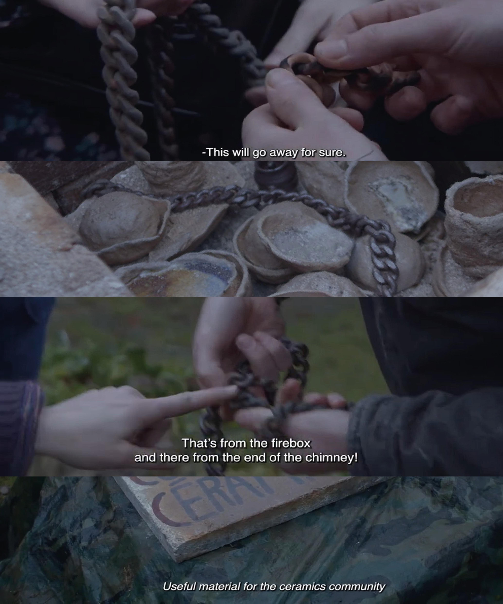
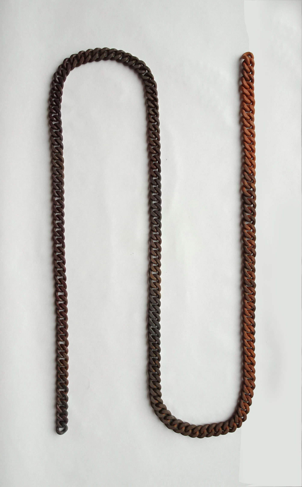
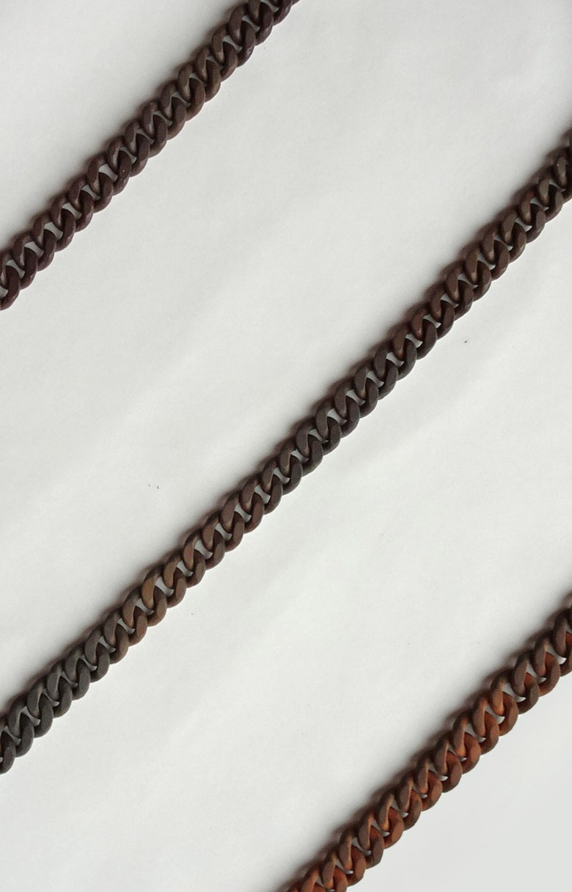
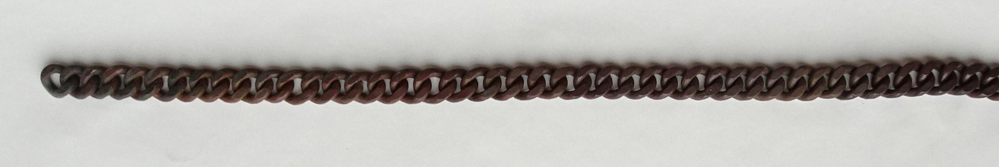

Flames path - exhibited in an ancient cloister of Brussels - 2021 - stoneware – 189x2,5x1 cm – photo : Léna Babinet

Screenshots of the documentary 'Cuire ensemble ici' - Clémentine Vaultier - 2021

Flames path - 2021 - stoneware – 189x2,5x1 cm

Flames path – detail
diagram of the behavior fire in a staggered flames kiln

Flames path – detail